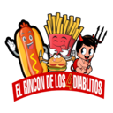

<header class="sitio-header">
    <!-- Botón de menú (hamburguesa) -->
    <div id="menu-btn" class="fas fa-bars icono"></div>
    <!-- Botón de búsqueda (comentado) -->
    <!--<div id="search-btn" class="fas fa-search icono"></div>-->
    <span></span><!-- Espacio visual -->
    <!-- Logo del sitio -->
    <a href="index.php" class="logo"></a>

    <!-- Barra principal de menú de navegación -->
    <nav class="navbar">
        <a href="../index.php#inicio">Inicio</a>
        <a href="../menu.php">Menu</a>
        <a href="index.php#ubicacion">Ubicación</a>
        <a href="opinion.php">Opiniones</a>
    </nav> 

    <!-- Iconos de redes sociales (WhatsApp e Instagram) -->
    <div class="iconosSuperior">
        <a href="https://wa.me/56979592806" class="fab fa-whatsapp icono"></a>
        <a href="https://www.instagram.com/el_rincon_de_los_4_diablitos/" class="fab fa-instagram icono"></a>
    </div>
</header>